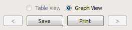

You can save
or print the graph of an analysis result into an image file in PNG
format.
Procedure
- Saving a Graph: Click
the Graph View button.
Figure 1. Graph View Save and Print
- Click Save. A File dialog box appears.
- Enter the name of the file
and click Save.
- Printing a Graph: Click
the Graph View button.
- Click Print to print a graph.